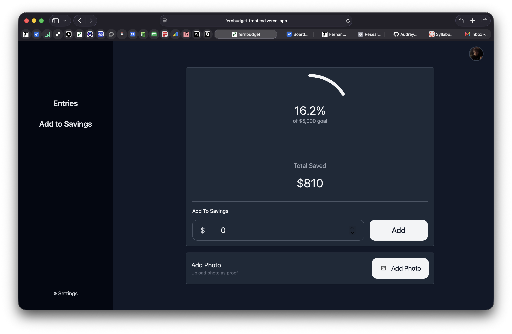
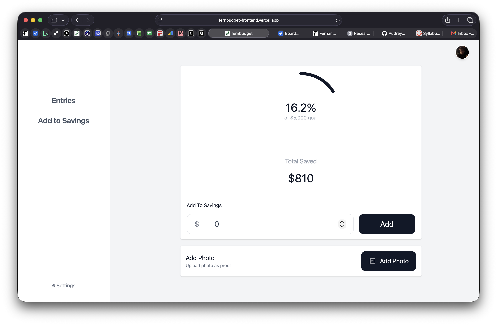
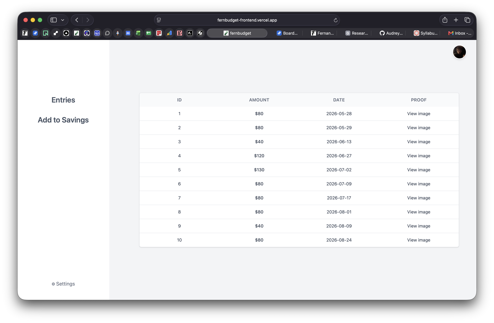
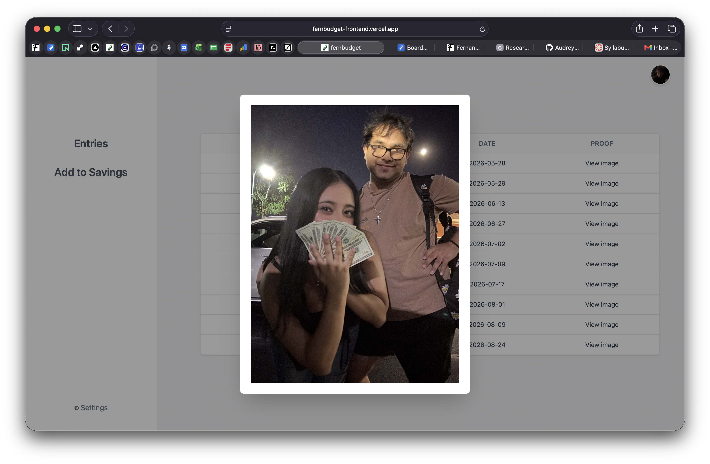

Personal savings tracker
FernBudget
See every step toward a savings goal.
A personal savings tracker I built to keep goals visible, log deposits, and add photo proof. Motivation lives alongside the numbers.

A savings log with room for the why.
The goal stays connected to dated contributions and their photo proof, while motivation keeps the reason for saving in view.
- Goal progress
- Compare the saved amount with your goal.
- Deposit history
- Keep contributions organized by date and amount.
- Photo proof
- Attach an image to make each saving entry more tangible.
- Motivation
- Keep encouragement close to the progress you are making.
Inside FernBudget
Progress you can look back on.
Screenshots show the goal overview, contribution history, photo proof, and light and dark modes.



FernBudget MVP timeline
-
MVP development
The tools behind FernBudget.
- React
- Express
- PostgreSQL
- Bruno
- CSS
- Git
- GitHub